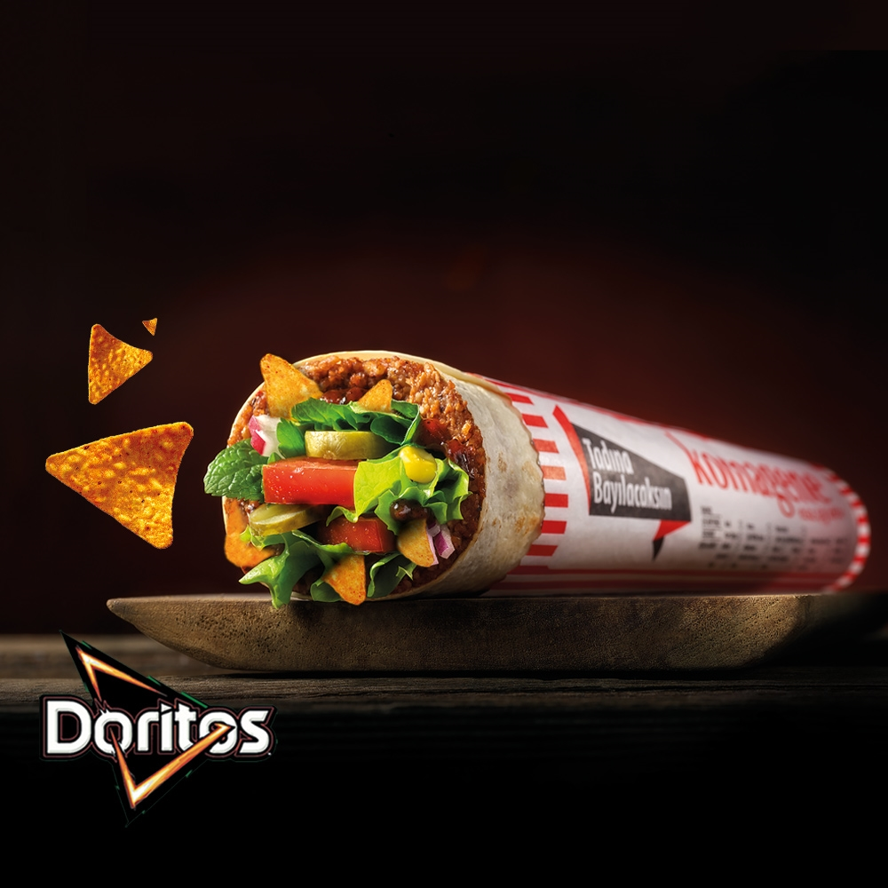
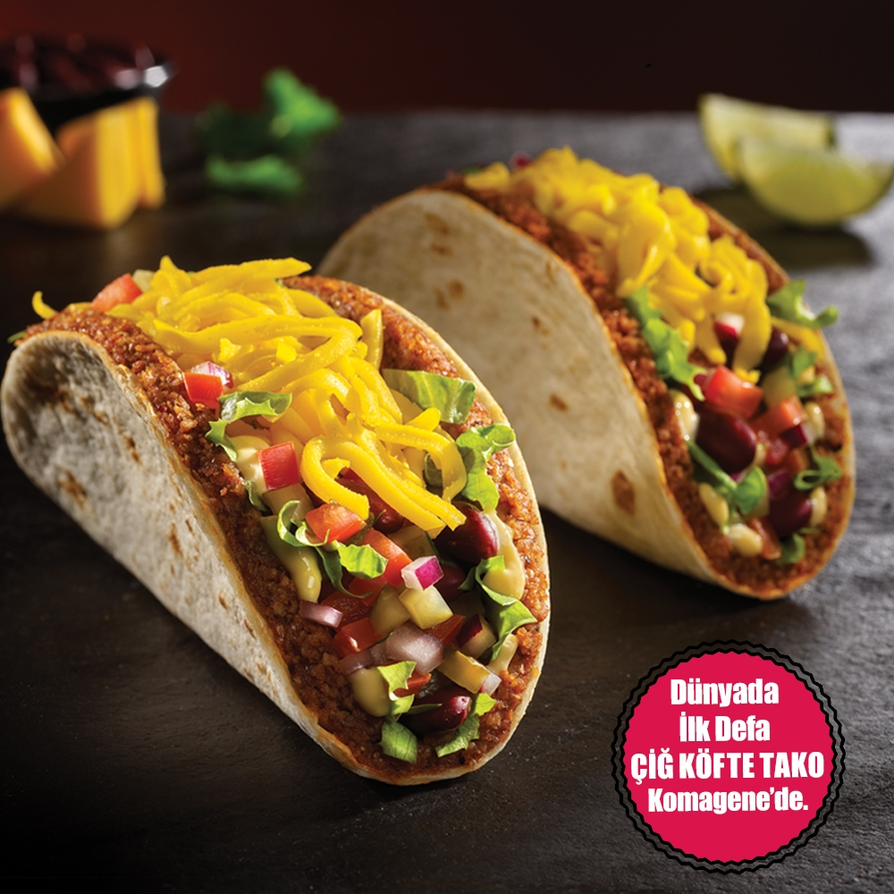
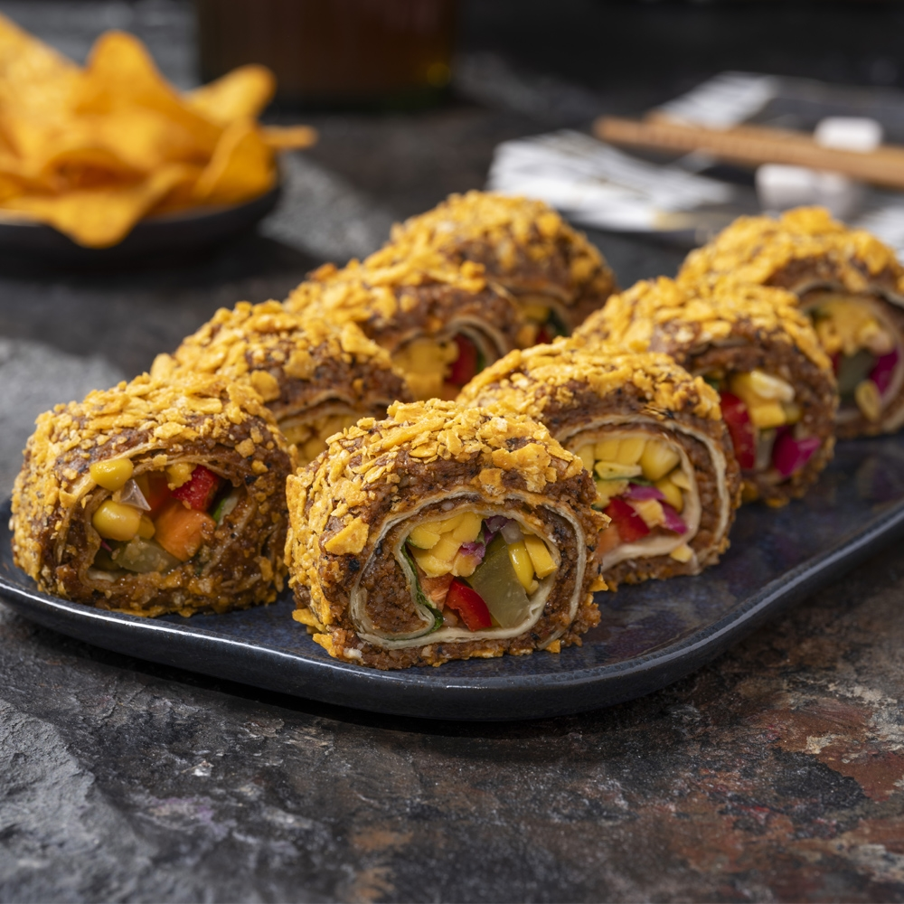

|  |  |  |
Left: Komagene Çiğ Köfte Dürüm (wrap), center: Komagene Çiğ Köfte Taco, right: Komagene Çiğ Köfte Sushi with Doritos
Çiğ Köfte is a part of mainstream fast food culture in Turkey, just like kebabs, pide, or foreign arrivals like McDonalds and KFC. The fast food chain Komagene is making strides in bringing çiğ köfte into the modern globalized food ecosystem, creating new fusions that cross culinary boundaries. The most prominent of this is its doritos series, which involves adding Turkish doritos (the American nacho cheese, which is known in turkey as "taco" flavor) to any wrap. Alongside this is the çiğ köfte taco, which involves using a smaller piece of lavaş as a shell, and combining it with chopped lettuce, onions, some "Mexican beans" (kidney beans) and shredded cheddar cheese. Çiğ köfte is spread around the inside of the shell. Recently, Komagene has expanded further and created the "Çiğ Köfte Suşi" or sushi series, which involves chopping up a wrap into smaller, bite-sized sections. layering the outside with çiğ köfte, and further adding a layer of either walnut, sesame seeds, or doritos to the köfte itself.
Having had both the doritos wrap and taco while studying in Turkey, I am sad to say the taco does not in fact live up to the hype. The cheese is cold and poorly mixed, and lavaş does not a tortilla make. However, whoever thought of including doritos was a bonafide genius. The crunch and seasoning of the chips meld perfectly with the spice of the köfte. It's beyond belief. Other chains, such as Damga, have copied Komagene's experiment, and I personally think this could be a productive way to market çiğ köfte in America, or in western nations more generally.